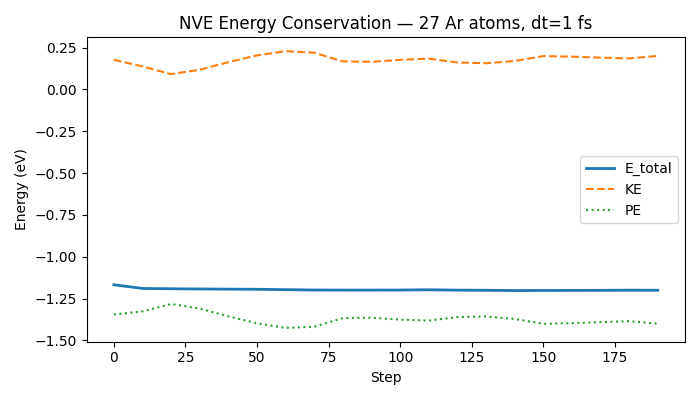

Note
Go to the end to download the full example code.
Microcanonical (NVE) Molecular Dynamics#
The NVE ensemble (constant Number of atoms, Volume, and Energy) is the most fundamental MD ensemble. The total energy E = KE + PE is conserved by the equations of motion, so any drift in E is a measure of integration error.
This example:
Builds a periodic simple-cubic argon crystal in a cubic box.
Initialises velocities from a Maxwell-Boltzmann distribution at T = 50 K.
Runs 200 steps of NVE MD with the Lennard-Jones potential.
Tracks potential energy, kinetic energy, and total energy at regular intervals to demonstrate energy conservation.
Optionally plots E(t) vs step (set
NVALCHEMI_PLOT=1to enable).
A WrapPeriodicHook folds atom positions
back into the unit cell at every step, preventing coordinates from drifting
far from the origin. An
EnergyDriftMonitorHook warns if the
per-atom-per-step energy drift exceeds a threshold.
from __future__ import annotations
import csv
import logging
import os
import torch
from nvalchemi.data import AtomicData, Batch
from nvalchemi.dynamics import NVE
from nvalchemi.dynamics.hooks import (
EnergyDriftMonitorHook,
LoggingHook,
NeighborListHook,
WrapPeriodicHook,
)
from nvalchemi.models.lj import LennardJonesModelWrapper
logging.basicConfig(level=logging.INFO)
LJ model and argon parameters#
Same Lennard-Jones parameters as the geometry-optimization example. Argon is well-described by LJ: it is a noble gas with purely dispersion interactions, no covalent bonding, and well-characterised ε and σ values from scattering experiments.
epsilon = 0.0104 eV— potential well depthsigma = 3.40 Å— zero-crossing distancer_min = 2^(1/6) σ ≈ 3.82 Å— equilibrium pair distance
LJ_EPSILON = 0.0104 # eV
LJ_SIGMA = 3.40 # Å
LJ_CUTOFF = 8.5 # Å
MAX_NEIGHBORS = 64 # periodic system can have more neighbours than a cluster
model = LennardJonesModelWrapper(
epsilon=LJ_EPSILON,
sigma=LJ_SIGMA,
cutoff=LJ_CUTOFF,
max_neighbors=MAX_NEIGHBORS,
)
Building a periodic argon crystal#
Place N_SIDE³ argon atoms on a simple-cubic lattice inside a cubic simulation box with periodic boundary conditions. The box side length is chosen so the lattice constant equals r_min (the LJ equilibrium distance), giving a near-equilibrium starting configuration.
Velocities are sampled from a Maxwell-Boltzmann distribution at T = 50 K. nvalchemi stores velocities in units of sqrt(eV/amu). The thermal speed scale is simply:
v_scale = sqrt(kT / m) [sqrt(eV/amu)]
where kT is in eV and m is in amu. No additional conversion factor is needed because the unit is defined so that KE = 0.5 * m * v² is directly in eV. The centre-of-mass velocity is zeroed to remove any net drift.
N_SIDE = 3 # atoms per side → N_SIDE³ = 27 atoms total
T_INIT = 50.0 # K
KB_EV = 8.617333262e-5 # eV/K
M_AR = 39.948 # amu (argon atomic mass)
kT = KB_EV * T_INIT # eV
_R_MIN = 2 ** (1 / 6) * LJ_SIGMA # ≈ 3.82 Å
spacing = _R_MIN
box_size = N_SIDE * spacing # Å
# Build simple-cubic lattice positions
coords = torch.arange(N_SIDE, dtype=torch.float32) * spacing
gx, gy, gz = torch.meshgrid(coords, coords, coords, indexing="ij")
positions = torch.stack([gx.flatten(), gy.flatten(), gz.flatten()], dim=-1)
n_atoms = positions.shape[0]
# Sample Maxwell-Boltzmann velocities
torch.manual_seed(42)
v_scale = (kT / M_AR) ** 0.5 # sqrt(eV/amu)
velocities = torch.randn(n_atoms, 3) * v_scale
# Zero the centre-of-mass velocity to remove net translation
velocities -= velocities.mean(dim=0, keepdim=True)
data = AtomicData(
positions=positions,
atomic_numbers=torch.full((n_atoms,), 18, dtype=torch.long), # Argon Z=18
forces=torch.zeros(n_atoms, 3),
energies=torch.zeros(1, 1),
cell=torch.eye(3).unsqueeze(0) * box_size,
pbc=torch.tensor([[True, True, True]]),
)
data.add_node_property("velocities", velocities)
batch = Batch.from_data_list([data])
print(
f"System: {n_atoms} Ar atoms, box={box_size:.2f} Å, "
f"T_init≈{T_INIT} K, v_scale={v_scale:.6f} sqrt(eV/amu)"
)
System: 27 Ar atoms, box=11.45 Å, T_init≈50.0 K, v_scale=0.010385 sqrt(eV/amu)
NVE integrator setup#
NVE integrates Newton’s equations with the
velocity-Verlet algorithm. dt=1.0 fs is a safe timestep for argon near
room temperature with LJ forces.
Three hooks are registered:
NeighborListHook— rebuilds the dense neighbor matrix when any atom has moved more thanskin/2since the last build (Verlet skin = 0.5 Å by default, so rebuild triggers at >0.25 Å displacement). A larger skin reduces rebuild frequency (faster) at the cost of a larger memory footprint; smaller skin is more memory-efficient but rebuilds more often.WrapPeriodicHook— folds positions back into the simulation cell after each position update.EnergyDriftMonitorHook— checks per-atom-per-step drift every step and emits a warning if it exceeds 1e-4 eV.
nve = NVE(model=model, dt=1.0, n_steps=200)
nve.register_hook(NeighborListHook(model.model_card.neighbor_config))
nve.register_hook(WrapPeriodicHook())
nve.register_hook(
EnergyDriftMonitorHook(
threshold=1e-4,
metric="per_atom_per_step",
action="warn",
frequency=10,
)
)
Running NVE and tracking energy conservation#
LoggingHook records energy (PE) and
temperature per graph to a CSV file every 10 steps. KE is not logged
directly, but can be recovered from temperature post-run:
KE = (3/2) · N · k_B · T
using the equipartition theorem (3 translational DOF per atom). All computation and I/O run asynchronously on a background thread.
NVE_LOG = "nve_energy.csv"
with LoggingHook(backend="csv", log_path=NVE_LOG, frequency=10) as log_hook:
nve.register_hook(log_hook)
batch = nve.run(batch)
print(f"NVE completed {nve.step_count} steps. Log: {NVE_LOG}")
NVE completed 200 steps. Log: nve_energy.csv
Results — energy conservation#
Read the CSV written by LoggingHook and reconstruct (step, KE, PE, E_total).
LoggingHook logs energy (PE) and temperature per graph; KE follows
from the equipartition theorem. For LJ argon at 50 K with dt=1 fs, total
energy drift is typically in the sub-meV range over a few hundred steps.
energy_log = [] # (step, KE, PE, E_total)
try:
with open(NVE_LOG) as f:
for row in csv.DictReader(f):
step = int(float(row["step"]))
pe = float(row["energy"])
T = float(row["temperature"])
ke = 1.5 * n_atoms * KB_EV * T
energy_log.append((step, ke, pe, ke + pe))
except FileNotFoundError:
print(f"Log file {NVE_LOG} not found — skipping energy analysis.")
if energy_log:
etot_vals = [r[3] for r in energy_log]
n_log = len(energy_log)
indices = [0, n_log // 2, n_log - 1]
print(f"\n{'step':>6} {'KE (eV)':>12} {'PE (eV)':>12} {'E_total (eV)':>14}")
print("-" * 50)
for idx in indices:
s, ke, pe, et = energy_log[idx]
print(f"{s:6d} {ke:12.6f} {pe:12.6f} {et:14.6f}")
e0 = etot_vals[0]
drift = max(abs(e - e0) for e in etot_vals)
drift_per_atom_per_step = drift / (n_atoms * nve.step_count)
print(f"\nMax |ΔE_total| over trajectory: {drift:.6f} eV")
print(
f"Per-atom-per-step drift: {drift_per_atom_per_step:.2e} eV/atom/step"
)
step KE (eV) PE (eV) E_total (eV)
--------------------------------------------------
0 0.177259 -1.345169 -1.167910
100 0.176638 -1.376082 -1.199444
190 0.200026 -1.400666 -1.200640
Max |ΔE_total| over trajectory: 0.034578 eV
Per-atom-per-step drift: 6.40e-06 eV/atom/step
Optional plot — total energy vs step#
Set the environment variable NVALCHEMI_PLOT=1 to generate a matplotlib
figure of E_total, KE, and PE vs simulation step.
if os.getenv("NVALCHEMI_PLOT", "0") == "1" and energy_log:
import matplotlib.pyplot as plt
steps = [r[0] for r in energy_log]
fig, ax = plt.subplots(figsize=(7, 4))
ax.plot(steps, [r[3] for r in energy_log], label="E_total", lw=2)
ax.plot(steps, [r[1] for r in energy_log], label="KE", lw=1.5, ls="--")
ax.plot(steps, [r[2] for r in energy_log], label="PE", lw=1.5, ls=":")
ax.set_xlabel("Step")
ax.set_ylabel("Energy (eV)")
ax.set_title(f"NVE Energy Conservation — {n_atoms} Ar atoms, dt=1 fs")
ax.legend()
fig.tight_layout()
plt.savefig("nve_energy_conservation.png", dpi=150)
print("Saved nve_energy_conservation.png")
plt.show()

Saved nve_energy_conservation.png
Total running time of the script: (0 minutes 0.840 seconds)